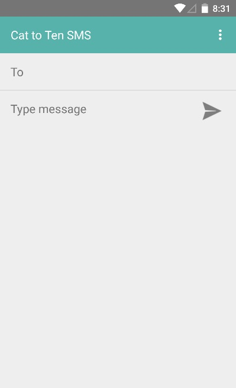
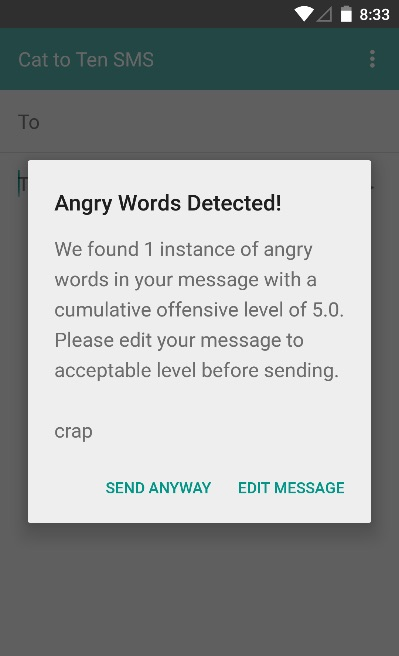
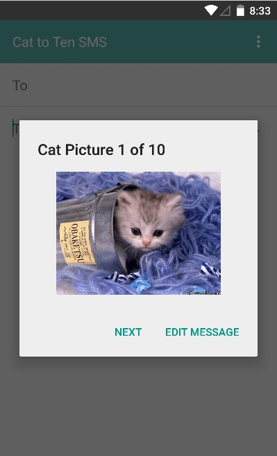
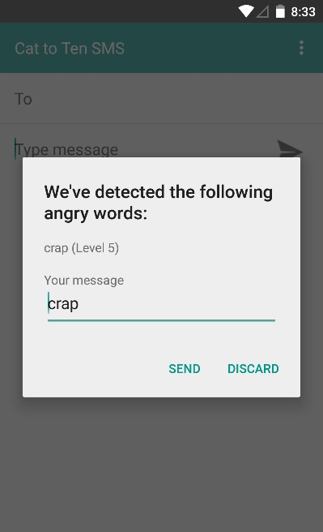

Jonathan Reyes, Mehran Mizani, Pauline Masigla
Cat To 10 is designed to curb cyber-bullying by warning users if their messages may be hurtful to the recipient before the messages are sent. The app is used as a layer above the native Android messaging app. Users type a message and indicate a recipient, and when they send the message, Cat To 10 takes the message and searches it for offensive phrases, which are kept in an SQLite database. Each offensive phrase has an associated Anger Score, and the message to be sent is analyzed and given an overall Anger Score.
 If the message's Anger Score is less than 5, then the message is passed to the native Android messaging app so that the user can send it. However, if the message's Anger Score is greater than or equal to 5, a dialog box warns the user that his or her message may be hurtful to the recipient. The user has two options: either edit the message before sending or send the message as is. If the user chooses the former option, then he or she has the opportunity to edit the message, after which the message will be re-analyzed in the same manner as the original message. If the user chooses to send the message as is, he or she will first need to click through 10 pictures of cats, which will hopefully calm the user down and put him or her into a more tranquil state of mind. After clicking through the 10 images, the message text is passed along to the native Android messaging app, and the user can send the message.
 Cat To Ten was built for Android version 21, but works for Android version 18 or above. The app was built in the Eclipse IDE.
The Cat to Ten app is primarily composed of three parts; a user-created database, a dictionary and SMS intercept activity. Database testing was implemented using queries to make sure the functionality was in place instead of using the interface. The database was also tested to handle hundreds of thousands of user defined input. The SMS intercept is designed to compare dictionary phrases with all sub-strings of a user’s message for possible offensive content. This must also check messages that a user edits for any remaining/new offensive content before sending it off.